《图解密码技术》1-6章汇报
学生：孟则霖
2018年5月7日
拿到书的第一件事，当然是把译者序里面的恺撒密码破译啦，得到的明文是：”If you want to learn more about cryptography. I recommend an online course instructed by professor Dan Boneh from Stanford University. Just search cryptography at coursera.org.”。似乎得到了译者的真传。
这一次学习的主要目的是扫盲，把密码学中最为基础的知识巩固扎实。
一、第一章笔记
1. 单向散列函数：用于保证完整性而非机密性，如MD5\SHA256。又称校验码、指纹、摘要。
2. 密码学家的工具箱：对称密码、公钥密码、单向散列函数、消息认证码、数字签名、伪随机数生成器。
3. 信息安全所面临的威胁分为四种：窃听、篡改、伪装、否认。
4. 隐写术的现代应用：数字水印就应用了这种原理，将版权或购买者信息嵌入到文件中，但不能实现加密。
5. 不要使用保密的加密算法，这种做法一般称为隐蔽式安全性（security by obsecurity），因为算法早晚会公诸于世、开发高强度的密码算法是非常困难的。
6. 社会工程学攻击：绕开破译密码，通过对受害者心理弱点，本能反应，好奇心，信任，贪婪等心理陷阱进行分析并且推理然后达到欺骗的目的（获取对方的信任）。
二、第二章笔记
1. 密钥空间：一种密码能够使用的所有密钥的集合。
2. 密钥加密密钥：Enigma中的每日密码是用来加密密钥的密码。
3. 标准化技术的出现，使得算法不再是秘密，也能被继续开发、研究和利用。但它的安全性也丝毫没有降低，因为密码算法和密钥是分开的。
三、第三章笔记
1. 对异或运算的四种解读：(1)相同为0，不同为1；(2)加法进位；(3)翻转操作； (4)奇数偶数相加。
2. ，其中A为明文，B为密钥，则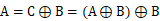。同时这种加密方法可以应用到图像的加密上，则B就对应了一个图像蒙版。
3. 一次性密码本无法破译，即是暴力破解也不行，无论计算机多快，可以瞬间遍历完成整个密钥空间，也无法确定那个解密的结果是正确的，因为可能会的到很多看似正确的明文（所有的排列组合都可能出现）。它的不可破性的严格证明是香农提出的。注意一次性密码本的密钥长度不应小于明文长度。当然这种密码的问题也很多，就不多写了。
4. 分组密码：以分组为单位进行处理的密码成为分组密码（block cipher）。
5. DES就是分组密码的一种。理解DES加密算法的重点在于理解Feistel网络，而这已经在《密码故事》的报告中说明了。我们知道无论f多复杂都可以正确加解密。书上这句话说的很好：“Feistel网络实际上就是从密码算法中抽取出‘密码的本质部分’并将其封装成一个轮函数”。这种密码另外还有一个特点：加密和解密可以用完全相同的结构来实现。
而轮函数f和子密钥的实现方法在此书中同样没有详细的解答，详见下方网址：
https://en.wikipedia.org/wiki/Data_Encryption_Standard#The_Feistel_(F)_function
6. 差分分析是一种针对分组密码的分析方法，思路是：“改变一部分明文并分析密文如何随之改变”。线性分析的思路是：“将明文和密文的对应比特进行XOR并计算其结果为0的概率。“随机性较好的密文概率应该为0.5，因而如果大量偏离0.5的话，就可以借此获得一些信息。这两种分析方法都可以对DES构成威胁。暴力破解也可以作为破解DES的一种辅助方式。
7. 三重DES事实上是对加密过程进行三次DES处理，分别是加密→解密→加密，而这三次操作均适用不同的三个密钥，因而密码长度达到了168bit。这种密钥的解密过程也很简单，就不多说了。3DES是兼容DES的（三次操作都是用同一密钥）。
另外，如果第一步第三步使用同一密钥，那就是DES-EDE2加密方式，其中EDE表示加密→解密→加密的过程。
8. AES算法的选拔过程了解一下，很有意思。现在使用的AES是由Joan Daemen和Vincent Rijmen提出的Rijndael算法。它使用SPN结构（Substitution�Cpermutation network）。AES的密钥长度固定为128bit、192bit或256bit，分组长度为128bit，并存放在一个4*4的矩阵中，每个矩阵存放1个字节=2个十六进制数=8bit，这个矩阵成为State。目前仅仅考虑密钥长度128位的情况，这样密钥可以表示成4*4的矩阵，每一个元素存放1个字节。算法分为以下步骤：
a) SubBytes：使用S-Box（替换矩阵）替换字节的值，取一个字节的前四位和后四位分别作为纵坐标和横坐标在S-Box中找到替换值，类似简单替换密码。其中S-Box是一个16*16的矩阵常量，可以在网上查到。
b) ShiftRows：取上一步的结果，并把每一行都平移不同的距离。
c) MixColumns：取上一步的结果，把每一个列向量乘以一个MC矩阵，得到一个列向量，并以此替换以前的列向量。
d) AddRoundKey：取上一步的结果，把它与轮密钥进行异或操作，得到最终结果。
以上操作是一轮过程，一般来说需要进行10轮操作。过程中，一共需要生成10个轮密钥，下面来看看轮密钥是怎么生成的，我们以第一轮的轮密钥举例：
a)
第一步：拿出初始密钥的第四列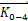，进行纵向的平移、再进行S-Box替换得到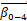，最后将与密钥的第一列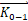和Rcon矩阵的第一列 进行异或，得到第一轮密钥的第一列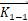。
进行异或，得到第一轮密钥的第一列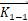。
b) 第二步：初始密钥的第二列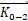与第一轮轮密钥的第一列，得到第一轮密钥的第二列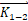，依此类推，直到把第一轮的密钥计算完毕。
其中Rcon 是一个10*4字节的矩阵，这是一个常数。并且每一轮的算法都是一样的。虽然过程比较麻烦，但是思路很简单，没有涉及很复杂的东西。
9. 书上说Rijndael的算法有着严谨的数学表达，在这里先不展开。
四、第四章笔记
这一章中的思想很总要，特别是每种模式的图解都非常好，英文名称和简称以及图示必须要透彻理解，最好要牢记。特别是在现在的学习阶段，最好是不是能默写一下图解。
https://en.wikipedia.org/wiki/Block_cipher_mode_of_operation
1. 分组密码（block cipher）：每次都只能处理一定长度的一块数据；流密码（stream cipher）：对数据流进行连续处理的一类密码算法（明文需要和密钥流结合）。DES/3DES/AES都属于分组密码，只有一次性密码本属于流密码。
2. 分组密码的模式：对长明文加密的迭代方法。
3. 五种分组模式：ECB/CBC/CTS/CFB/OFB/CTR。
4. ECB（Electronic CodeBook）：将明文分组加密后的结果将直接成为密文分组。也就是说明文分组和密文分组是一一对应的关系。总结一下ECB的特点：每个明文分组各自独立进行加解密。书上例举了一个通过对调几个分组来篡改信息的例子，事实上还可以对分组进行删除、复制等操作。
5. CBC（Cipher Block Chaining）：加密过程从第一组明文开始，将明文分组与前一个密文分组进行XOR，再进行加密，而第一个明文分组与初始化向量IV进行异或。解密过程从第一组密文开始，解密后再与IV求异或得第一组明文，第二组密文解密后与第一组密文求异或得到第二组明文。这样一来，前后顺序就非常重要，无法对调、替换或删除。其中初始化向量IV需要随机生成，并作为格外的输入（其实也就是密钥的一部分了，因为这个IV是不能泄漏或预测。）。对CBC进行破解的思路是，对IV中的bit进行翻转，则明文也会有bit被翻转。
另外关于IV在不同的具体算法中实现方式也是不一样的。SSL就是使用这种模式实现的。
6. 填充部分（Padding）：当明文长度不为分组长度的整数倍时，需要在最后一个分组中填充一些数据凑满一个分组长度。注意理解填充提示攻击。
7. CTS（Cipher Text Stealing）：使用最后一个分组的前一个密文分组数据来进行填充。
8. CFB（Cipher FeedBack）：前一个密文分组会被送回到密码算法的输入端。明文分组和密文分组之间并没有经过加密这一步骤。与CBC的区别在于：CFB是将上一个分组或IV加密后，再与明文分组进行XOR得到密文，而没有直接对明文分组进行加密。这里的IV与CBC类似。这种模式实际上是使用分组密码来实现流密码。这里的加密算法就相当于用来生成密钥流的伪随机数生成器，IV就相当于种子（每次加密时都要生成），但是IV在应用中应该怎么传输呢？维基当中的图片更清楚。
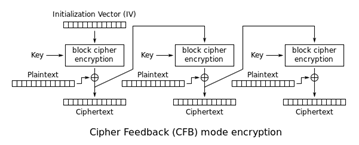
https://en.wikipedia.org/wiki/Block_cipher_mode_of_operation#Cipher_Feedback_(CFB)
9. 密钥流（Key Stream）：是一串伪随机字符与明文信息结合而生成的加密的比特信息流。
https://en.wikipedia.org/wiki/Keystream
10. 针对CFB的重放攻击（Replay Attack）：是指攻击者发送一个目的主机已接收过的包，来达到欺骗系统的目的，主要用于身份认证过程，破坏认证的正确性。
11. OFB（Output FeedBack）：这是指密码算法的输出会反馈到密码算法的输入中。简答来说，首先对IV进行加密得到 ，得到的结果与明文分组1进行异或；再对上一步的到的
，得到的结果与明文分组1进行异或；再对上一步的到的 进行加密，再与明文分组2进行异或；依次类推。这里每一步的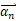都是流密钥，流密钥的生成和XOR操作可以并行。
进行加密，再与明文分组2进行异或；依次类推。这里每一步的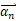都是流密钥，流密钥的生成和XOR操作可以并行。
12. CTR（CounTeR）：通过将逐次累加计数器进行加密来生成密钥流的流密码。具体做法是：每次加密都会生成一个计数器的初始值nonce，而每一组加密完成后，都会对其+1。它的弱点与OFB类似，在密文中对比特翻转，也会引起明文中比特的翻转。GCM是一种对CTR的优化方案，可以增加“认证”方案，避免上述安全性问题。
13. 关于这几种加密方式的快速记忆：
a) ECB：电子密码本，最基本的方式，很好记。
b) CBC：密文分组链接，上一组密文和下一组明文XOR。
c) CFB：密文反馈，上一组密文作为反馈再进行加密。
d) OFB：输出反馈，加密结果作为反馈再进行加密。
e) CTR：计数器，每一份组计数加一。
五、第五章笔记
1. 密钥配送问题最简单的解决方案：事先共享、KDC、Diffie-Hellman密钥交换、公钥密码。
2. KDC，Key Distribution Center，密钥分配中心：用户间需要点对点通讯时，此机构负责生成一个伪随机密钥通信密钥发送给通讯双方（使用各自的密钥加密），双方使用各自的密钥解密后得到本次通信用的密钥。Diffie-Hellman密钥交换：《密码故事》中已经提及。
3. 公钥密码的两大问题：公钥认证和速度过慢。
4. 在这一章学习的基本数学包括：时钟运算（加减乘除、乘方、对数）。RSA实际上就是利用到了离散对数。
5. RSA生成密钥对的过程：N→L→E→D。其中N是两个大质数p和q的乘积，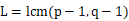，再找到满足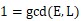的E（E和L互质），最后找到满足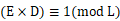的D。
6. 最小公倍数（LCM）的计算：最小公倍数=两整数的乘积/最大公约数。
7. 最大公约数（GCD）的计算：辗转相除法（欧几里得定理）。
8. RSA破解方案：1对N质因数分解反求p、q。2通过密文，使用离散对数算法，反求明文。3通过伪随机数算法推测p和q。1、2均无有效方法。
9. RSA的攻击方方案：1中间人攻击（抵御方案：认证）。2选择密文攻击（抵御方案：RSA-OAEP）。
10. 一些数据：应用场景下，N长度若为2048，p、q长度一般为
11. 问题：判断质数的费马测试和米勒・拉宾测试？
12. 其他公钥密码：ElGamal方式、Rabin方式、椭圆曲线密码。
六、第六章笔记
1. 混合密码系统（hybrid cryptosystem）：非对称算法解决对称密钥的配送问题。使用对称算法和会话密钥加密消息明文，再使用非对称算法加密会话密钥。
2. 高强度的混合密码系统：强大的伪随机数生成算法、对称和非对称密钥长度的平衡。
七、关于SSL/TLS
我现在通过WireShark对SSL/TLS的通信过程进行一次分析，我现在以百度官网为例。
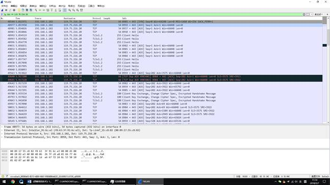
明显，百度官网使用的是TLS1.2。由于请求太多，我们仅对本地端口为8982的HTTPS请求进行分析，因此我们将过滤器条件设置如下：
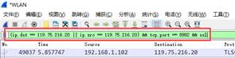
得到如下过滤结果：
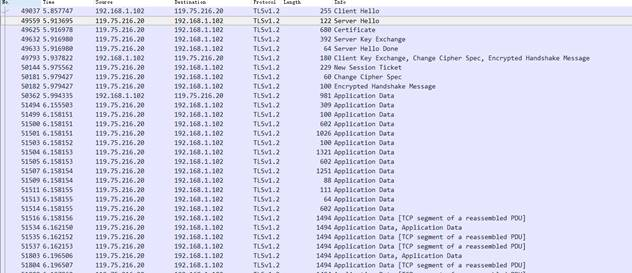
我们现在来进行分析，其中No.xxxxx代表某一个请求编号，如No.49037上图的49037号请求。某个过程可能包括多个请求，编号可能不连续，但一定升序排列。
第一步：Hello（No.49037~No.49559）
下方左、右图分别为“ClientHello”和“ServerHello”。
在“ClientHello”中浏览器指定了客户端所有支持的加密方式（Cipher Suite），并发送给服务器，当服务器收到请求后，从客户端的CipherSuite中筛选出可用的某一个，并使用将筛选结果“ServerHello”返回给客户端。可见现在浏览器已经普遍支持椭圆曲线加密算法了。
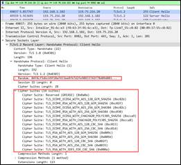 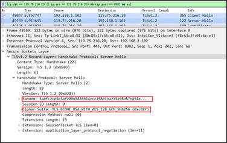
第二步：Certificate（No.49625）
下方为“Certificate”报文，内容主要是用于RSA的公钥证书。可见，这个报文中包含了两个证书，这两个证书在格式上是统一的，而长度不同，由于证书其他信息都很明确，我们这里主要看看extensions字段。

因而，我们来比较一下“extensions”字段，左侧为第一个，右侧为第二个（红框表示自己特有的）：
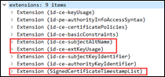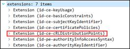
比较可以发现，两个证书不同，但都是X.509 v3标准的，关于这些extensions的字段信息可以参考下表：
|
KeyUsage |
指明证书中公钥的作用。 |
https://tools.ietf.org/html/rfc3280#page-28 |
|
AuthorityInfoAccessSyntax |
指明如何访问CA服务。 |
https://tools.ietf.org/html/rfc3280#page-45 |
|
certificatePolicies |
指明策略信息。 |
https://tools.ietf.org/html/rfc3280#page-30 |
|
BasicConstraints |
指明了使用此证书的基本约束。 |
https://tools.ietf.org/html/rfc3280#page-35 |
|
subjectAltName |
证书主体的别名。 |
https://tools.ietf.org/html/rfc3280#page-22 |
|
extKeyUsage |
用于补充或是替换KeyUsage。 |
https://tools.ietf.org/html/rfc3280#page-40 |
|
SubjectKeyIdentifier |
一个散列值，用于验证含有特定公钥的证书。 |
https://tools.ietf.org/html/rfc3280#page-26 |
|
authorityKeyIdentifier |
一个散列值，用于验证与私约证书相关的公钥。 |
https://tools.ietf.org/html/rfc3280#page-25 |
|
SignedCertificateTimestampList |
|
|
|
|
|
|
另外通过发布者信息可以看出两个证书的作用是不一样的：
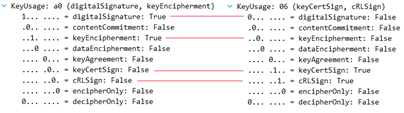
第三步： ServerKeyExchange（No.49632）
这里使用Diffie-Hellman交换方式交换公钥信息，用于传递具体的加密参数。此处加密算法使用的是椭圆曲线SECP256R1，而签名算法使用的RSA。
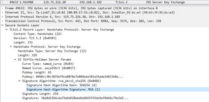
第四步：ServerHelloDone（No.49633）
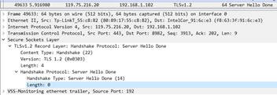
此时通信的初始化完成。
第五步：ClientKeyExchange、ChangeCipherSpec和EncryptedHandshakeMessage（No.49793）
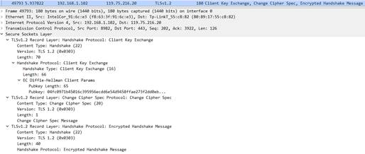
这一步的三个操作，都是由客户端向服务器提出的。ClientKeyExchange通过Diffie-Hellman将Pre-master Secret加密后（使用Certificate或ServerKeyExchange中的公钥）传送给服务器，这是由客户端生成的伪随机数，服务器根据这个PMS生成主密码；
第六步：NewSessionTicket、ChangeCipherSpec、EncryptedHandshakeMessage（No.50144~50182）
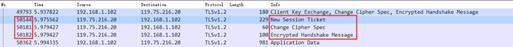
这一步的三个操作，都是由服务器向客户端提出的。ChangeCipherSpec变更密码加密模式，此消息发送后，就开始使用协商一致的密码和加密算法进行通信了。EncryptedHandshakeMessage则是用于保证中间没人篡改报文以及秘钥的正确性。